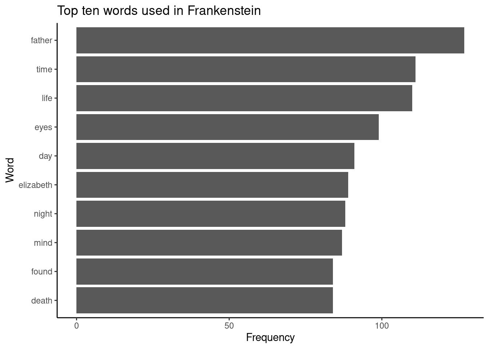
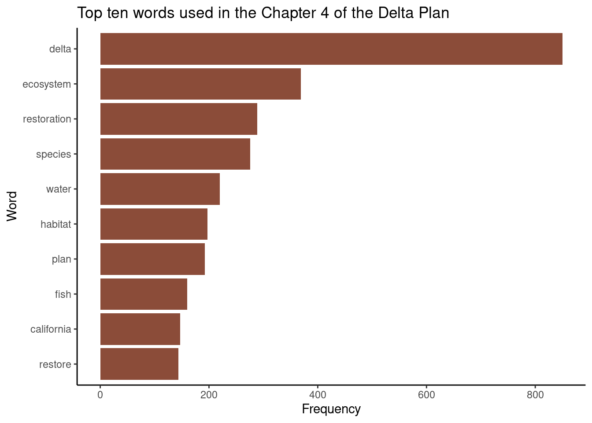
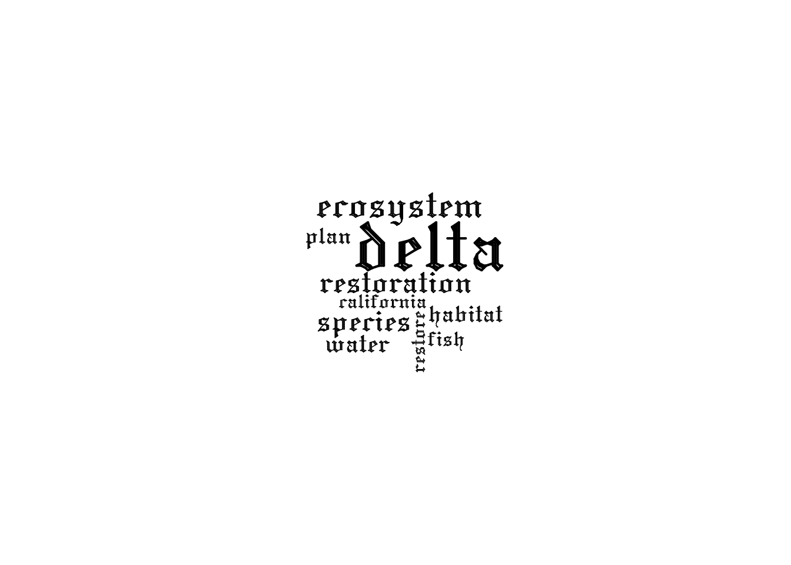

tidy_frank_stopanti <- tidy_frank %>%anti_join(stop_words, by ="word")tidy_frank_stop <- tidy_frank[!(tidy_frank$word %in% stop_words$word),]
Tabulate top words
tidy_frank_top10 <- tidy_frank_stop %>%count(word) %>%slice_max(n, n =10)
ggplot(tidy_frank_top10, aes(x =reorder(word, n), y = n)) +geom_bar(stat ="identity") +labs(x ="Word", y ="Frequency", title ="Top ten words used in Frankenstein") +theme_classic() +coord_flip()

ggsave("Frankenstein_words.png", height =4, width =6, units ="in")
library(tidytext) # tidy text toolslibrary(quanteda) # create a corpus
Warning in stringi::stri_info(): Your current locale is not in the list of
available locales. Some functions may not work properly. Refer to
stri_locale_list() for more details on known locale specifiers.
Warning in stringi::stri_info(): Your current locale is not in the list of
available locales. Some functions may not work properly. Refer to
stri_locale_list() for more details on known locale specifiers.
tidy_dp_ch4_top10 <- tidy_dp_ch4_clean %>%count(word) %>%slice_max(n, n =10)
ggplot(tidy_dp_ch4_top10, aes(x =reorder(word, n), y = n)) +geom_bar(stat ="identity", fill ="salmon4") +labs(x ="Word", y ="Frequency", title ="Top ten words used in the Chapter 4 of the Delta Plan") +theme_classic() +coord_flip()

ggsave("DeltaPlan_ch4_words.png", height =4, width =6, units ="in")
pal <-brewer.pal(6,"Dark2")wordcloud(words = tidy_dp_ch4_top10$word,freq = tidy_dp_ch4_top10$n,vfont=c("gothic english","plain"))

ggsave("DeltaPlan_ch4_words_GOTHIC.png", height =4, width =6, units ="in")